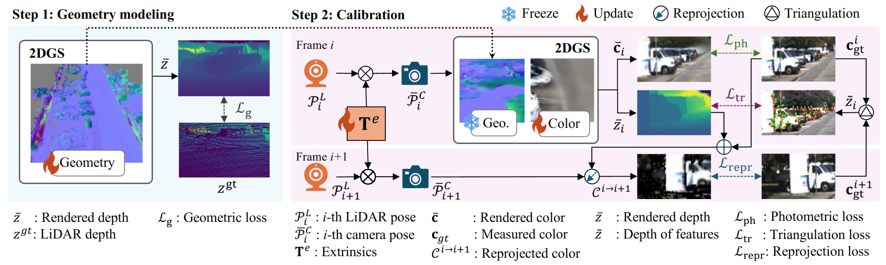

Shuyi Zhou, Shuxiang Xie, Ryoichi Ishikawa, Takeshi Oishi
The University of Tokyo
Accepted to IEEE Robotics and Automation Letters (Ra-L), 2025
We present a robust method for LiDAR-camera calibration leveraging 2D Gaussian Splatting.The proposed method begins by reconstructing colorless 2DGS using LiDAR point clouds. Subsequently, we update the colors of the Gaussian splats by minimizing the photometric loss. The extrinsic parameters are optimized during this process. Additionally, we address the limitations of the photometric loss by incorporating the reprojection and triangulation losses, thereby enhancing the calibration robustness and accuracy.
Visualization of 2DGS geometry training process.
Simultaneous LiDAR-camera cailbration and coloring for 2DGS.
@article{zhou2025robust,
title={Robust LiDAR-Camera Calibration With 2D Gaussian Splatting},
author={Zhou, Shuyi and Xie, Shuxiang and Ishikawa, Ryoichi and Oishi, Takeshi},
journal={IEEE Robotics and Automation Letters},
year={2025},
publisher={IEEE}
}